EgressGateway Failover
Controller Failover
EgressGateway 的控制面故障转移，可以通过在安装时指定 controller.replicas 参数来控制 Controller 的副本数量。 在多个 Controller 副本中的一个发生故障时，系统会自动选择另一个副本作为主要控制器，以确保服务的持续提供。
Datapath Failover
在处理数据面故障转移时，创建 EgressGateway 可以通过使用 nodeSelector 来选择一组节点作为 Egress Node。Egress IP 将会绑定到其中的一个节点上。当某个节点发生故障或者节点上的 Egress Agent 故障时，Egress IP 将会自动转移到另一个可用节点上，从而保证服务的连续性和可靠性。
apiVersion: egressgateway.spidernet.io/v1beta1
kind: EgressGateway
metadata:
name: egw1
spec:
clusterDefault: true
ippools:
ipv4:
- 10.6.1.55
- 10.6.1.56
ipv4DefaultEIP: 10.6.1.56
ipv6:
- fd00::55
- fd00::56
ipv6DefaultEIP: fd00::55
nodeSelector:
selector:
matchLabels:
egress: "true"
status:
nodeList:
- name: node1
status: Ready
eips:
- ipv4: 10.6.1.56
ipv6: fd00::55
policies:
- name: policy1
namespace: default
- name: node2
status: Ready
在上述 EgressGateway 的定义中，通过设置 egress: "true"，将两个节点 node1 和 node2 作为 Egress Node。node1 为被选为了生效的节点，其有效 Egress IP 可在 status 中查看。如果 node1 遇到故障，那么 node2 将作为故障切换的节点。

通过 Helm 的 values 配置，可以调整状态检测和 Egress IP 转移的时间。
feature.tunnelMonitorPeriod：Egress Controller 以秒为单位设置的间隔检查 EgressTunnel 的最后更新状态，默认为5。feature.tunnelUpdatePeriod：Egress Agent 以秒为单位设置的间隔更新 EgressTunnel 状态，默认为5。feature.eipEvictionTimeout：如果 EgressTunnel 的最后更新时间超过此时间，则将节点的 Egress IP 移动到另一个可用节点，单位为秒，默认为5。
apiVersion: egressgateway.spidernet.io/v1beta1
kind: EgressTunnel
metadata:
name: workstation1
spec: {}
status:
lastHeartbeatTime: "2023-11-27T12:04:56Z"
mark: "0x26d9b723"
phase: Ready
EgressGateway Agent 会通过 feature.tunnelUpdatePeriod 间隔定时更新 status.lastHeartbeatTime 字段，EgressGateway Controller 则会通过 feature.tunnelMonitorPeriod 定时列出所有 EgressTunnel，分别检查 status.lastHeartbeatTime 与 feature.eipEvictionTimeout 的和是否超过当前时间。

Datapath Failover 问题排查步骤：
- 首先，查看 EgressGateway 应用的安装配置文件
values.yaml，确认与 Datapath Failover 相关的配置是否设置合理，特别是确保eipEvictionTimeout的值大于tunnelMonitorPeriod加上tunnelUpdatePeriod的总和； - 执行
kubectl get egt -w命令，检查EgressTunnel的状态。检查选中的 Node 是否处于HeartbeatTimeout状态，并且是否存在其他处于Ready状态的EgressTunnel； - 如果想查询是否出现过 HeartbeatTimeout 导致的 IP 切换，可以在 controller 容器检索
update tunnel status to HeartbeatTimeout相关的日志。